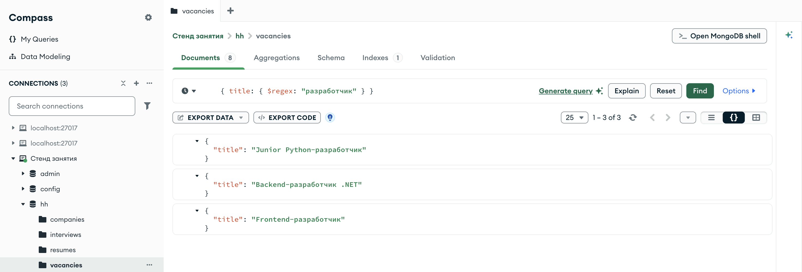
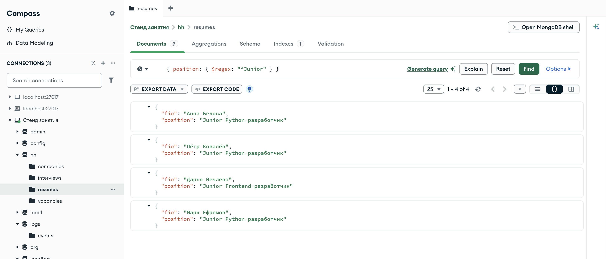
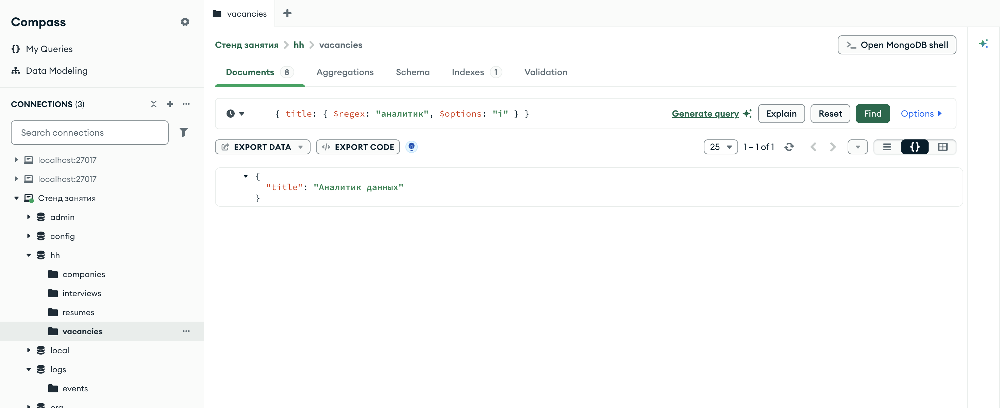
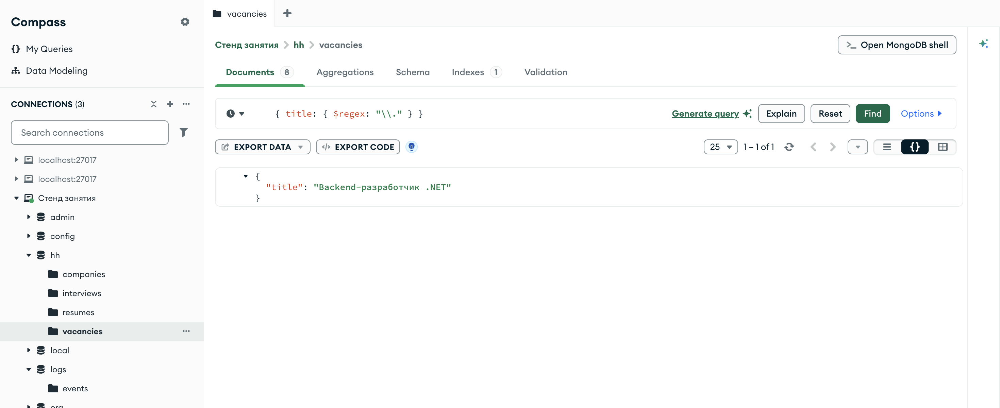
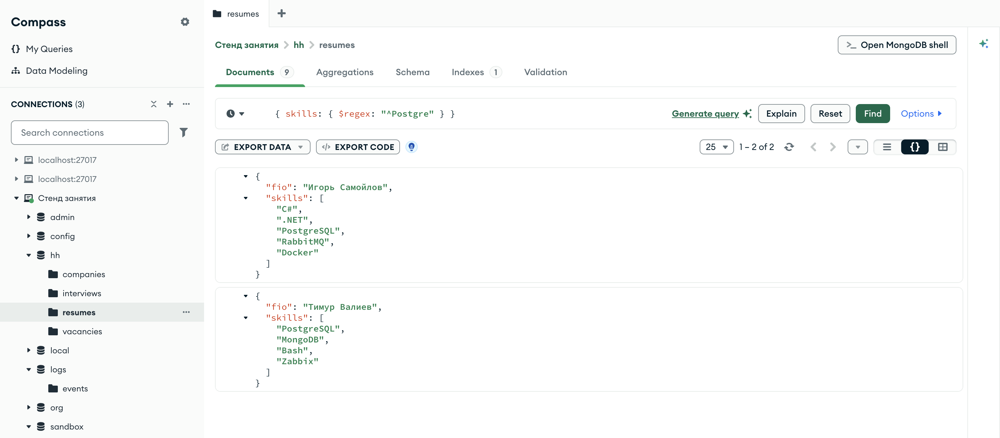
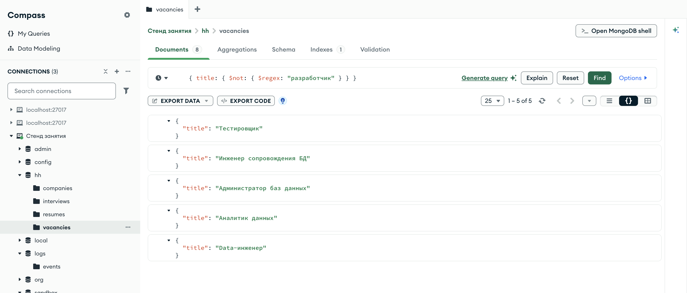
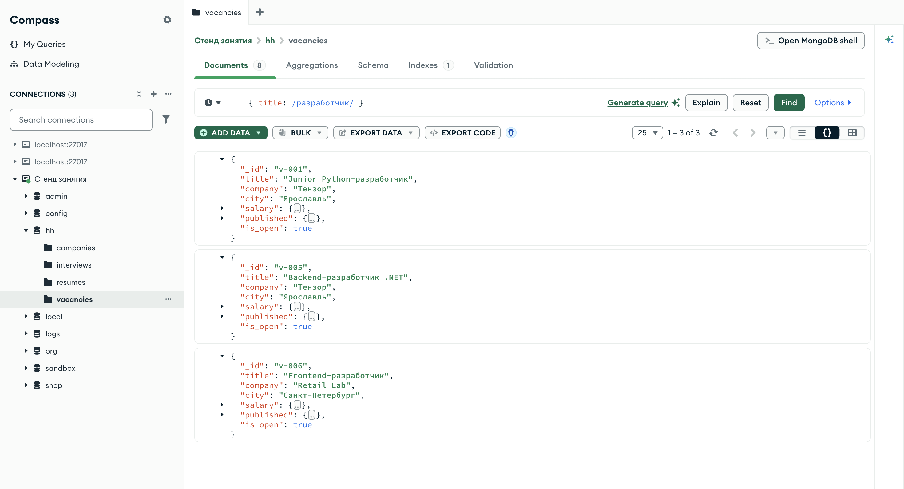
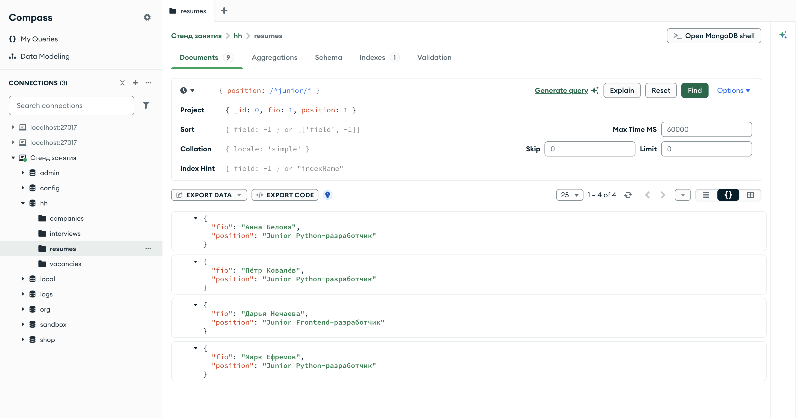

Справочник по MongoDB · модуль 2 · язык фильтров
2.7
Текстовые шаблоны:
$regex и $options
Условия на строки до сих пор проверяли значение целиком. Здесь разобран оператор $regex, который проверяет строку по шаблону — регулярному выражению: содержит ли она слово, с чего начинается, чем заканчивается. Отдельно — параметр $options, отключающий учёт регистра, символы шаблона, которые нужно экранировать, и то, как шаблон работает с массивами и логическими операторами.
- Категория
- Язык запросов
- Уровень
- Начальный
- Связанные темы
- Фильтр и точечная нотация, логика
$notи$or, индексы в модуле 3 - Зачем это знать
- Искать документы по части строки
Как запускать примеры этой главы
mongodb-glava-2.7-python.zip, 60 КБmongodb-glava-2.7-ruby.zip, 59 КБmongodb-glava-2.7-go.zip, 64 КБmongodb-glava-2.7-cpp.zip, 62 КБ — все примеры главы готовыми программами, учебные базы и стенд в Docker. В README.md — запуск в Docker, если Compass нет или он не подключается, и на установленном сервере с Compass, а также что должна напечатать каждая программа.lessons/ch2_7.py — пример вставляется в конец файлаlessons/ch2_7.rb — пример вставляется в конец файлаlessons/ch2_7.go — пример внутрь скобок в конце main, функции и типы — выше mainlessons/ch2_7.cpp — пример внутрь скобок в конце main, функции — выше maincd lessons, затем python ch2_7.pycd lessons, затем python3 ch2_7.py · в Docker: docker compose run --rm python lessons/ch2_7.pycd lessons, затем ruby ch2_7.rb · в Docker: docker compose run --rm ruby lessons/ch2_7.rbcd lessons, затем go run ch2_7.go · в Docker: docker compose run --rm go lessons/ch2_7.gocd lessons, затем g++ -std=c++17 ch2_7.cpp -o prog $(pkg-config --cflags --libs libmongocxx1) && ./prog · в Docker: docker compose run --rm cpp lessons/ch2_7.cpp§1$regex: строка по шаблону
Регулярное выражение — строка-шаблон, которая описывает множество подходящих строк. Большинство символов шаблона означают сами себя: шаблон разработчик подходит к любой строке, где эти буквы стоят подряд. Несколько символов служебные, они разобраны в §2 и §4.
Оператор $regex принимает шаблон строкой и отбирает документы, у которых значение поля подходит под шаблон. Без служебных символов это условие «строка содержит подстроку»: {"title": {"$regex": "разработчик"}} — в названии вакансии есть слово «разработчик» в любом месте.
for doc in vacancies.find({"title": {"$regex": "разработчик"}}, {"_id": 0, "title": 1}): print(doc)
mongocxx::options::find options; options.projection(make_document(kvp("_id", 0), kvp("title", 1))); for (const auto& doc : vacancies.find(make_document(kvp("title", make_document(kvp("$regex", "разработчик")))), options)) { std::cout << bsoncxx::to_json(doc, bsoncxx::ExtendedJsonMode::k_relaxed) << std::endl; }
cursor, _ := vacancies.Find(ctx, bson.D{{Key: "title", Value: bson.D{{Key: "$regex", Value: "разработчик"}}}}, options.Find().SetProjection(bson.D{{Key: "_id", Value: 0}, {Key: "title", Value: 1}})) for cursor.Next(ctx) { var doc bson.D cursor.Decode(&doc) out, _ := bson.MarshalExtJSON(doc, false, false) fmt.Println(string(out)) }
vacancies.find({ "title" => { "$regex" => "разработчик" } }, projection: { "_id" => 0, "title" => 1 }) .each { |doc| puts doc.inspect }
{'title': 'Junior Python-разработчик'}
{'title': 'Backend-разработчик .NET'}
{'title': 'Frontend-разработчик'}
{ "title" : "Junior Python-разработчик" }
{ "title" : "Backend-разработчик .NET" }
{ "title" : "Frontend-разработчик" }
{"title":"Junior Python-разработчик"}
{"title":"Backend-разработчик .NET"}
{"title":"Frontend-разработчик"}
{"title"=>"Junior Python-разработчик"}
{"title"=>"Backend-разработчик .NET"}
{"title"=>"Frontend-разработчик"}
Три вакансии из восьми. Слово стоит в конце названия у первой и третьей и в середине у второй — для шаблона без служебных символов положение подстроки роли не играет. Равенство {"title": "разработчик"} не нашло бы ни одной вакансии: оно требует, чтобы название целиком состояло из этого слова.

hh.vacancies, фильтр { title: { $regex: "разработчик" } }Счётчик 1 – 3 of 3. В поле фильтра оператор $regex записан так же, как в коде; в §8 показана вторая, короткая запись шаблона.
§2Начало и конец строки
Два служебных символа привязывают шаблон к краю строки. Знак ^ в начале шаблона означает «строка начинается с», знак $ в конце — «строка заканчивается на». Такие символы называют якорями. Шаблон ^Junior подходит к «Junior Python-разработчик» и не подходит к строке, где «Junior» стоит в середине.
print("вакансии: начинается с Junior: ", vacancies.count_documents({"title": {"$regex": "^Junior"}})) print("резюме: начинается с Junior: ", resumes.count_documents({"position": {"$regex": "^Junior"}})) print("вакансии: кончается на разработчик:", vacancies.count_documents({"title": {"$regex": "разработчик$"}})) for doc in resumes.find({"position": {"$regex": "^Junior"}}, {"_id": 0, "fio": 1, "position": 1}): print(doc)
std::cout << "вакансии: начинается с Junior: " << vacancies.count_documents(make_document(kvp("title", make_document(kvp("$regex", "^Junior"))))) << std::endl; std::cout << "резюме: начинается с Junior: " << resumes.count_documents(make_document(kvp("position", make_document(kvp("$regex", "^Junior"))))) << std::endl; std::cout << "вакансии: кончается на разработчик: " << vacancies.count_documents(make_document(kvp("title", make_document(kvp("$regex", "разработчик$"))))) << std::endl; mongocxx::options::find options; options.projection(make_document(kvp("_id", 0), kvp("fio", 1), kvp("position", 1))); for (const auto& doc : resumes.find(make_document(kvp("position", make_document(kvp("$regex", "^Junior")))), options)) { std::cout << bsoncxx::to_json(doc, bsoncxx::ExtendedJsonMode::k_relaxed) << std::endl; }
vNachalo, _ := vacancies.CountDocuments(ctx, bson.D{{Key: "title", Value: bson.D{{Key: "$regex", Value: "^Junior"}}}}) rNachalo, _ := resumes.CountDocuments(ctx, bson.D{{Key: "position", Value: bson.D{{Key: "$regex", Value: "^Junior"}}}}) vKonec, _ := vacancies.CountDocuments(ctx, bson.D{{Key: "title", Value: bson.D{{Key: "$regex", Value: "разработчик$"}}}}) fmt.Println("вакансии: начинается с Junior: ", vNachalo) fmt.Println("резюме: начинается с Junior: ", rNachalo) fmt.Println("вакансии: кончается на разработчик:", vKonec) cursor, _ := resumes.Find(ctx, bson.D{{Key: "position", Value: bson.D{{Key: "$regex", Value: "^Junior"}}}}, options.Find().SetProjection(bson.D{{Key: "_id", Value: 0}, {Key: "fio", Value: 1}, {Key: "position", Value: 1}})) for cursor.Next(ctx) { var doc bson.D cursor.Decode(&doc) out, _ := bson.MarshalExtJSON(doc, false, false) fmt.Println(string(out)) }
puts "вакансии: начинается с Junior: " + vacancies.count_documents({ "title" => { "$regex" => "^Junior" } }).to_s puts "резюме: начинается с Junior: " + resumes.count_documents({ "position" => { "$regex" => "^Junior" } }).to_s puts "вакансии: кончается на разработчик: " + vacancies.count_documents({ "title" => { "$regex" => "разработчик$" } }).to_s resumes.find({ "position" => { "$regex" => "^Junior" } }, projection: { "_id" => 0, "fio" => 1, "position" => 1 }) .each { |doc| puts doc.inspect }
вакансии: начинается с Junior: 1
резюме: начинается с Junior: 4
вакансии: кончается на разработчик: 2
{'fio': 'Анна Белова', 'position': 'Junior Python-разработчик'}
{'fio': 'Пётр Ковалёв', 'position': 'Junior Python-разработчик'}
{'fio': 'Дарья Нечаева', 'position': 'Junior Frontend-разработчик'}
{'fio': 'Марк Ефремов', 'position': 'Junior Python-разработчик'}
вакансии: начинается с Junior: 1
резюме: начинается с Junior: 4
вакансии: кончается на разработчик: 2
{ "fio" : "Анна Белова", "position" : "Junior Python-разработчик" }
{ "fio" : "Пётр Ковалёв", "position" : "Junior Python-разработчик" }
{ "fio" : "Дарья Нечаева", "position" : "Junior Frontend-разработчик" }
{ "fio" : "Марк Ефремов", "position" : "Junior Python-разработчик" }
вакансии: начинается с Junior: 1
резюме: начинается с Junior: 4
вакансии: кончается на разработчик: 2
{"fio":"Анна Белова","position":"Junior Python-разработчик"}
{"fio":"Пётр Ковалёв","position":"Junior Python-разработчик"}
{"fio":"Дарья Нечаева","position":"Junior Frontend-разработчик"}
{"fio":"Марк Ефремов","position":"Junior Python-разработчик"}
вакансии: начинается с Junior: 1
резюме: начинается с Junior: 4
вакансии: кончается на разработчик: 2
{"fio"=>"Анна Белова", "position"=>"Junior Python-разработчик"}
{"fio"=>"Пётр Ковалёв", "position"=>"Junior Python-разработчик"}
{"fio"=>"Дарья Нечаева", "position"=>"Junior Frontend-разработчик"}
{"fio"=>"Марк Ефремов", "position"=>"Junior Python-разработчик"}
С «Junior» начинается одна вакансия и четыре резюме. Название «Backend-разработчик .NET» под шаблон разработчик$ не подошло: после слова в нём стоит « .NET», и строка кончается не на «разработчик». Шаблон с обоими якорями, ^Тестировщик$, подходит только к строке, которая целиком совпадает с текстом, — то же самое делает равенство.

hh.resumes, фильтр { position: { $regex: "^Junior" } }У всех четырёх резюме должность начинается со слова «Junior», дальше идут разные специальности. Резюме, где «Junior» стоит не первым словом, шаблон с ^ не пропустил бы.
§3Регистр: $options
Шаблон учитывает регистр букв, как и равенство из главы 2.1: «junior» и «Junior» — разные строки. Параметр $options задаёт режим проверки. Значение "i" — от case-insensitive — отключает учёт регистра. Параметр пишется рядом с $regex, в том же документе условия.
print("junior: ", vacancies.count_documents({"title": {"$regex": "junior"}})) print("junior, i: ", vacancies.count_documents({"title": {"$regex": "junior", "$options": "i"}})) print("аналитик: ", vacancies.count_documents({"title": {"$regex": "аналитик"}})) print("аналитик, i:", vacancies.count_documents({"title": {"$regex": "аналитик", "$options": "i"}}))
std::cout << "junior: " << vacancies.count_documents(make_document(kvp("title", make_document(kvp("$regex", "junior"))))) << std::endl; std::cout << "junior, i: " << vacancies.count_documents(make_document(kvp("title", make_document(kvp("$regex", "junior"), kvp("$options", "i"))))) << std::endl; std::cout << "аналитик: " << vacancies.count_documents(make_document(kvp("title", make_document(kvp("$regex", "аналитик"))))) << std::endl; std::cout << "аналитик, i: " << vacancies.count_documents(make_document(kvp("title", make_document(kvp("$regex", "аналитик"), kvp("$options", "i"))))) << std::endl;
lat, _ := vacancies.CountDocuments(ctx, bson.D{{Key: "title", Value: bson.D{{Key: "$regex", Value: "junior"}}}}) latI, _ := vacancies.CountDocuments(ctx, bson.D{{Key: "title", Value: bson.D{{Key: "$regex", Value: "junior"}, {Key: "$options", Value: "i"}}}}) kir, _ := vacancies.CountDocuments(ctx, bson.D{{Key: "title", Value: bson.D{{Key: "$regex", Value: "аналитик"}}}}) kirI, _ := vacancies.CountDocuments(ctx, bson.D{{Key: "title", Value: bson.D{{Key: "$regex", Value: "аналитик"}, {Key: "$options", Value: "i"}}}}) fmt.Println("junior: ", lat) fmt.Println("junior, i: ", latI) fmt.Println("аналитик: ", kir) fmt.Println("аналитик, i:", kirI)
puts "junior: " + vacancies.count_documents({ "title" => { "$regex" => "junior" } }).to_s puts "junior, i: " + vacancies.count_documents({ "title" => { "$regex" => "junior", "$options" => "i" } }).to_s puts "аналитик: " + vacancies.count_documents({ "title" => { "$regex" => "аналитик" } }).to_s puts "аналитик, i: " + vacancies.count_documents({ "title" => { "$regex" => "аналитик", "$options" => "i" } }).to_s
junior: 0 junior, i: 1 аналитик: 0 аналитик, i: 1
junior: 0 junior, i: 1 аналитик: 0 аналитик, i: 1
junior: 0 junior, i: 1 аналитик: 0 аналитик, i: 1
junior: 0 junior, i: 1 аналитик: 0 аналитик, i: 1
Шаблоны в нижнем регистре без параметра не нашли ничего: в названиях вакансий «Junior» и «Аналитик» написаны с заглавной буквы. С "i" нашлось по одной вакансии. Для кириллицы параметр работает так же, как для латиницы. В поиске по вводу пользователя обычно ставят "i": пользователь не обязан угадывать, с какой буквы записано название в базе.

hh.vacancies, фильтр { title: { $regex: "аналитик", $options: "i" } }Параметр $options стоит в поле фильтра рядом с $regex. Нашлась вакансия «Аналитик данных»: название начинается с заглавной буквы, и шаблон в нижнем регистре без "i" его не находил.
§4Символы шаблона и экранирование
Кроме якорей, в регулярных выражениях есть и другие служебные символы. Точка означает «любой один символ», звёздочка — «предыдущий символ повторяется сколько угодно раз», круглые скобки объединяют часть шаблона в группу.
| Символ | Значение в шаблоне | Пример |
|---|---|---|
^ | начало строки | ^Junior — начинается с «Junior» |
$ | конец строки | разработчик$ — кончается на «разработчик» |
. | любой один символ | C. — «C#», «C+», «CS» |
* | предыдущий символ ноль и более раз | Post.*SQL — «PostgreSQL», «PostSQL» |
( ) | группа | (Junior|Middle) — одно из двух слов |
| | одна из альтернатив | Python|Go — «Python» или «Go» |
Чтобы служебный символ означал сам себя, перед ним ставят обратную косую черту: \. — точка, \( — открывающая скобка. Это называется экранированием. В исходном коде всех четырёх языков обратная косая черта внутри строки в двойных кавычках сама экранируется, поэтому шаблон \. записывается как "\\.".
print("шаблон .: ", vacancies.count_documents({"title": {"$regex": "."}})) print("шаблон \\.:", vacancies.count_documents({"title": {"$regex": "\\."}})) for doc in vacancies.find({"title": {"$regex": "\\."}}, {"_id": 0, "title": 1}): print(doc)
std::cout << "шаблон .: " << vacancies.count_documents(make_document(kvp("title", make_document(kvp("$regex", "."))))) << std::endl; std::cout << "шаблон \\.: " << vacancies.count_documents(make_document(kvp("title", make_document(kvp("$regex", "\\."))))) << std::endl; mongocxx::options::find options; options.projection(make_document(kvp("_id", 0), kvp("title", 1))); for (const auto& doc : vacancies.find(make_document(kvp("title", make_document(kvp("$regex", "\\.")))), options)) { std::cout << bsoncxx::to_json(doc, bsoncxx::ExtendedJsonMode::k_relaxed) << std::endl; }
lyuboy, _ := vacancies.CountDocuments(ctx, bson.D{{Key: "title", Value: bson.D{{Key: "$regex", Value: "."}}}}) tochka, _ := vacancies.CountDocuments(ctx, bson.D{{Key: "title", Value: bson.D{{Key: "$regex", Value: "\\."}}}}) fmt.Println("шаблон .: ", lyuboy) fmt.Println("шаблон \\.:", tochka) cursor, _ := vacancies.Find(ctx, bson.D{{Key: "title", Value: bson.D{{Key: "$regex", Value: "\\."}}}}, options.Find().SetProjection(bson.D{{Key: "_id", Value: 0}, {Key: "title", Value: 1}})) for cursor.Next(ctx) { var doc bson.D cursor.Decode(&doc) out, _ := bson.MarshalExtJSON(doc, false, false) fmt.Println(string(out)) }
puts "шаблон .: " + vacancies.count_documents({ "title" => { "$regex" => "." } }).to_s puts "шаблон \\.: " + vacancies.count_documents({ "title" => { "$regex" => "\\." } }).to_s vacancies.find({ "title" => { "$regex" => "\\." } }, projection: { "_id" => 0, "title" => 1 }) .each { |doc| puts doc.inspect }
шаблон .: 8
шаблон \.: 1
{'title': 'Backend-разработчик .NET'}
шаблон .: 8
шаблон \.: 1
{ "title" : "Backend-разработчик .NET" }
шаблон .: 8
шаблон \.: 1
{"title":"Backend-разработчик .NET"}
шаблон .: 8
шаблон \.: 1
{"title"=>"Backend-разработчик .NET"}
Шаблон из одной точки подошёл ко всем восьми названиям: в каждом есть хотя бы один символ. Экранированная точка нашла одно название — то, где в тексте стоит точка, «Backend-разработчик .NET». Та же ошибка в поиске по адресам сайтов даёт лишние совпадения: шаблон .ru подходит и к .ru, и к xru.

hh.vacancies, экранированная точка — одна вакансияВ поле фильтра Compass шаблон записан строкой, поэтому обратная косая черта удвоена так же, как в коде: "\\.". Счётчик 1 – 1 of 1, в названии найденной вакансии точка стоит перед «NET».
§5Шаблон и поле-массив
Для массива $regex работает по общему правилу главы 2.1: шаблон проверяется на каждом элементе, и достаточно одного совпадения. Пример ищет резюме, где среди навыков есть строка, начинающаяся с «Postgre».
for doc in resumes.find({"skills": {"$regex": "^Postgre"}}, {"_id": 0, "fio": 1, "skills": 1}): print(doc)
mongocxx::options::find options; options.projection(make_document(kvp("_id", 0), kvp("fio", 1), kvp("skills", 1))); for (const auto& doc : resumes.find(make_document(kvp("skills", make_document(kvp("$regex", "^Postgre")))), options)) { std::cout << bsoncxx::to_json(doc, bsoncxx::ExtendedJsonMode::k_relaxed) << std::endl; }
cursor, _ := resumes.Find(ctx, bson.D{{Key: "skills", Value: bson.D{{Key: "$regex", Value: "^Postgre"}}}}, options.Find().SetProjection(bson.D{{Key: "_id", Value: 0}, {Key: "fio", Value: 1}, {Key: "skills", Value: 1}})) for cursor.Next(ctx) { var doc bson.D cursor.Decode(&doc) out, _ := bson.MarshalExtJSON(doc, false, false) fmt.Println(string(out)) }
resumes.find({ "skills" => { "$regex" => "^Postgre" } }, projection: { "_id" => 0, "fio" => 1, "skills" => 1 }) .each { |doc| puts doc.inspect }
{'fio': 'Игорь Самойлов', 'skills': ['C#', '.NET', 'PostgreSQL', 'RabbitMQ', 'Docker']}
{'fio': 'Тимур Валиев', 'skills': ['PostgreSQL', 'MongoDB', 'Bash', 'Zabbix']}
{ "fio" : "Игорь Самойлов", "skills" : [ "C#", ".NET", "PostgreSQL", "RabbitMQ", "Docker" ] }
{ "fio" : "Тимур Валиев", "skills" : [ "PostgreSQL", "MongoDB", "Bash", "Zabbix" ] }
{"fio":"Игорь Самойлов","skills":["C#",".NET","PostgreSQL","RabbitMQ","Docker"]}
{"fio":"Тимур Валиев","skills":["PostgreSQL","MongoDB","Bash","Zabbix"]}
{"fio"=>"Игорь Самойлов", "skills"=>["C#", ".NET", "PostgreSQL", "RabbitMQ", "Docker"]}
{"fio"=>"Тимур Валиев", "skills"=>["PostgreSQL", "MongoDB", "Bash", "Zabbix"]}
Два резюме: у Игоря Самойлова и Тимура Валиева среди навыков есть «PostgreSQL». Элемент не обязан совпадать с шаблоном целиком: шаблон ^Postgre подошёл бы и к «PostgreSQL 16», и к «Postgres».

hh.resumes, фильтр { skills: { $regex: "^Postgre" } }В обоих раскрытых массивах среди навыков есть "PostgreSQL": у Игоря Самойлова третьим элементом, у Тимура Валиева — первым. Шаблон проверялся на каждом элементе, и одного совпадения хватило.
§6Шаблон вместе с $not и $or
В главе 2.4 было сказано, что $not нужен, когда условие трудно записать наоборот. Шаблон — такое условие: «строка не содержит слово» одним $regex не записать. $not принимает документ с $regex так же, как документ с любым другим оператором. Несколько шаблонов на одно поле соединяются через $or.
print("не содержит разработчик: ", vacancies.count_documents({"title": {"$not": {"$regex": "разработчик"}}})) print("Junior или Frontend в начале:", vacancies.count_documents({"$or": [{"title": {"$regex": "^Junior"}}, {"title": {"$regex": "^Frontend"}}]}))
std::cout << "не содержит разработчик: " << vacancies.count_documents(make_document(kvp("title", make_document(kvp("$not", make_document(kvp("$regex", "разработчик"))))))) << std::endl; std::cout << "Junior или Frontend в начале: " << vacancies.count_documents(make_document(kvp("$or", make_array(make_document(kvp("title", make_document(kvp("$regex", "^Junior")))), make_document(kvp("title", make_document(kvp("$regex", "^Frontend")))))))) << std::endl;
neSoderzhit, _ := vacancies.CountDocuments(ctx, bson.D{{Key: "title", Value: bson.D{{Key: "$not", Value: bson.D{{Key: "$regex", Value: "разработчик"}}}}}}) ili, _ := vacancies.CountDocuments(ctx, bson.D{{Key: "$or", Value: bson.A{bson.D{{Key: "title", Value: bson.D{{Key: "$regex", Value: "^Junior"}}}}, bson.D{{Key: "title", Value: bson.D{{Key: "$regex", Value: "^Frontend"}}}}}}}) fmt.Println("не содержит разработчик: ", neSoderzhit) fmt.Println("Junior или Frontend в начале:", ili)
puts "не содержит разработчик: " + vacancies.count_documents({ "title" => { "$not" => { "$regex" => "разработчик" } } }).to_s puts "Junior или Frontend в начале: " + vacancies.count_documents({ "$or" => [{ "title" => { "$regex" => "^Junior" } }, { "title" => { "$regex" => "^Frontend" } }] }).to_s
не содержит разработчик: 5 Junior или Frontend в начале: 2
не содержит разработчик: 5 Junior или Frontend в начале: 2
не содержит разработчик: 5 Junior или Frontend в начале: 2
не содержит разработчик: 5 Junior или Frontend в начале: 2
Вакансий без слова «разработчик» в названии пять — восемь минус три из §1. Через $or нашлись две вакансии: одна начинается с «Junior», другая с «Frontend». Два шаблона можно объединить и в один с альтернативой: ^(Junior|Frontend).

hh.vacancies, фильтр { title: { $not: { $regex: "разработчик" } } }Пять названий, и ни в одном нет слова «разработчик». Вместе с тремя вакансиями из §1 получаются все восемь.
§7Шаблон и скорость поиска
Чтобы проверить документ по шаблону, сервер читает значение поля и прогоняет по нему регулярное выражение. Без индекса так проверяется каждый документ коллекции. Индекс по полю хранит значения в отсортированном порядке, и для шаблона с якорем ^ в начале сервер может взять из индекса только строки с нужным началом — так же, как ищут слово в словаре по первым буквам. Для шаблона без якоря такой приём не работает: подстрока может стоять в любом месте, и сервер просматривает все значения. Параметр "i" тоже мешает использовать порядок индекса. Индексы и чтение планов запросов разобраны в модуле 3.
§8Шаблоны в Compass
Кадры в разделах выше сняты с оператором $regex, как в коде. В поле фильтра Compass шаблон можно записать и вторым способом — литералом регулярного выражения между косыми чертами — /разработчик/. Параметры ставятся после второй косой черты: /junior/i.

hh.vacancies, фильтр { title: /разработчик/ } — те же три вакансии, что в §1Счётчик 1 – 3 of 3. В поле фильтра шаблон стоит между косыми чертами, без кавычек. В названиях трёх вакансий слово «разработчик» стоит в разных местах.

hh.resumes, фильтр { position: /^junior/i } — четыре резюмеШаблон в нижнем регистре с параметром i нашёл те же четыре резюме, что ^Junior в §2; проекция в поле Project оставляет только ФИО и должность. В коде этот литерал соответствует записи {"$regex": "^junior", "$options": "i"}.
§9Частые ошибки
| Что написано | Что происходит | Как правильно |
|---|---|---|
{"title": {"$regex": "junior"}} | Пусто: шаблон учитывает регистр букв | {"$regex": "junior", "$options": "i"} |
{"site": {"$regex": ".ru"}} | Точка означает любой символ: совпадёт и xru, и .ru в середине строки | {"$regex": "\\.ru$"} |
{"title": {"$regex": "(Junior"}} | Ошибка сервера: Regular expression is invalid: missing closing parenthesis | {"$regex": "\\(Junior"} |
{"title": {"$regex": "Тестировщик"}} | Находит и названия, где слово стоит внутри строки | Равенство или шаблон с якорями ^…$ |
| Шаблон собран из текста, который ввёл пользователь | Символы ., *, ( в тексте меняют смысл шаблона или ломают его | Экранировать: re.escape(text) |
| Что написано | Что происходит | Как правильно |
|---|---|---|
make_document(kvp("title", make_document(kvp("$regex", "junior")))) | Пусто: шаблон учитывает регистр букв | make_document(kvp("$regex", "junior"), kvp("$options", "i")) |
make_document(kvp("site", make_document(kvp("$regex", ".ru")))) | Точка означает любой символ: совпадёт и xru, и .ru в середине строки | make_document(kvp("$regex", "\\.ru$")) |
make_document(kvp("title", make_document(kvp("$regex", "(Junior")))) | Ошибка сервера: Regular expression is invalid: missing closing parenthesis | make_document(kvp("$regex", "\\(Junior")) |
make_document(kvp("title", make_document(kvp("$regex", "Тестировщик")))) | Находит и названия, где слово стоит внутри строки | Равенство или шаблон с якорями ^…$ |
| Шаблон собран из текста, который ввёл пользователь | Символы ., *, ( в тексте меняют смысл шаблона или ломают его | Экранировать спецсимволы обратной косой чертой перед подстановкой |
| Что написано | Что происходит | Как правильно |
|---|---|---|
bson.D{{Key: "title", Value: bson.D{{Key: "$regex", Value: "junior"}}}} | Пусто: шаблон учитывает регистр букв | bson.D{{Key: "$regex", Value: "junior"}, {Key: "$options", Value: "i"}} |
bson.D{{Key: "site", Value: bson.D{{Key: "$regex", Value: ".ru"}}}} | Точка означает любой символ: совпадёт и xru, и .ru в середине строки | bson.D{{Key: "$regex", Value: "\\.ru$"}} |
bson.D{{Key: "title", Value: bson.D{{Key: "$regex", Value: "(Junior"}}}} | Ошибка сервера: Regular expression is invalid: missing closing parenthesis | bson.D{{Key: "$regex", Value: "\\(Junior"}} |
bson.D{{Key: "title", Value: bson.D{{Key: "$regex", Value: "Тестировщик"}}}} | Находит и названия, где слово стоит внутри строки | Равенство или шаблон с якорями ^…$ |
| Шаблон собран из текста, который ввёл пользователь | Символы ., *, ( в тексте меняют смысл шаблона или ломают его | Экранировать: regexp.QuoteMeta(text) |
| Что написано | Что происходит | Как правильно |
|---|---|---|
{ "title" => { "$regex" => "junior" } } | Пусто: шаблон учитывает регистр букв | { "$regex" => "junior", "$options" => "i" } |
{ "site" => { "$regex" => ".ru" } } | Точка означает любой символ: совпадёт и xru, и .ru в середине строки | { "$regex" => "\\.ru$" } |
{ "title" => { "$regex" => "(Junior" } } | Ошибка сервера: Regular expression is invalid: missing closing parenthesis | { "$regex" => "\\(Junior" } |
{ "title" => { "$regex" => "Тестировщик" } } | Находит и названия, где слово стоит внутри строки | Равенство или шаблон с якорями ^…$ |
| Шаблон собран из текста, который ввёл пользователь | Символы ., *, ( в тексте меняют смысл шаблона или ломают его | Экранировать: Regexp.escape(text) |
§10Проверьте себя
Чем {"title": {"$regex": "разработчик"}} отличается от {"title": "разработчик"}?
Шаблон отбирает названия, в которых слово стоит в любом месте. Равенство требует, чтобы название целиком было словом «разработчик». В учебной базе первый фильтр находит три вакансии, второй — ни одной.
Почему {"title": {"$regex": "junior"}} ничего не нашёл?
Шаблон учитывает регистр, а в названии «Junior» написано с заглавной буквы. Нужен параметр "$options": "i" или шаблон с заглавной буквой.
Что найдёт шаблон "."?
Все документы, где в поле есть хотя бы один символ: точка в шаблоне означает любой символ. Чтобы искать саму точку, её экранируют: шаблон \., в коде — "\\.".
Как найти вакансии, в названии которых нет слова «разработчик»?
Через отрицание шаблона: {"title": {"$not": {"$regex": "разработчик"}}}. В учебной базе таких вакансий пять.
Какой шаблон быстрее на большой коллекции с индексом по полю: ^Junior или Junior?
^Junior: строки в индексе отсортированы, и сервер берёт только те, что начинаются с «Junior». Шаблон без якоря требует просмотреть все значения поля.
§11Шпаргалка
{"title": {"$regex": "разработчик"}}
{"position": {"$regex": "^Junior"}}
{"title": {"$regex": "junior", "$options": "i"}}
{"title": {"$regex": "\\."}}
{"title": {"$not": {"$regex": "разработчик"}}}
make_document(kvp("title", make_document(kvp("$regex", "разработчик"))))
make_document(kvp("position", make_document(kvp("$regex", "^Junior"))))
make_document(kvp("title", make_document(kvp("$regex", "junior"), kvp("$options", "i"))))
make_document(kvp("title", make_document(kvp("$regex", "\\."))))
make_document(kvp("title", make_document(kvp("$not", make_document(kvp("$regex", "разработчик"))))))
bson.D{{Key: "title", Value: bson.D{{Key: "$regex", Value: "разработчик"}}}}
bson.D{{Key: "position", Value: bson.D{{Key: "$regex", Value: "^Junior"}}}}
bson.D{{Key: "title", Value: bson.D{{Key: "$regex", Value: "junior"}, {Key: "$options", Value: "i"}}}}
bson.D{{Key: "title", Value: bson.D{{Key: "$regex", Value: "\\."}}}}
bson.D{{Key: "title", Value: bson.D{{Key: "$not", Value: bson.D{{Key: "$regex", Value: "разработчик"}}}}}}
{ "title" => { "$regex" => "разработчик" } }
{ "position" => { "$regex" => "^Junior" } }
{ "title" => { "$regex" => "junior", "$options" => "i" } }
{ "title" => { "$regex" => "\\." } }
{ "title" => { "$not" => { "$regex" => "разработчик" } } }
Итог главы
$regex проверяет строку по регулярному выражению; шаблон без служебных символов означает «содержит подстроку». Якоря ^ и $ привязывают шаблон к началу и концу строки. Шаблон учитывает регистр, и параметр $options: "i" это отключает. Точка, звёздочка, скобки и другие служебные символы экранируются обратной косой чертой, а в строках кода сама черта удваивается. На массиве шаблон проверяется для каждого элемента, $not отрицает его, $or объединяет несколько. Шаблон с якорем ^ может использовать индекс, шаблон без якоря требует просмотреть все значения. Следующая глава — о сравнении двух полей одного документа между собой: $expr.